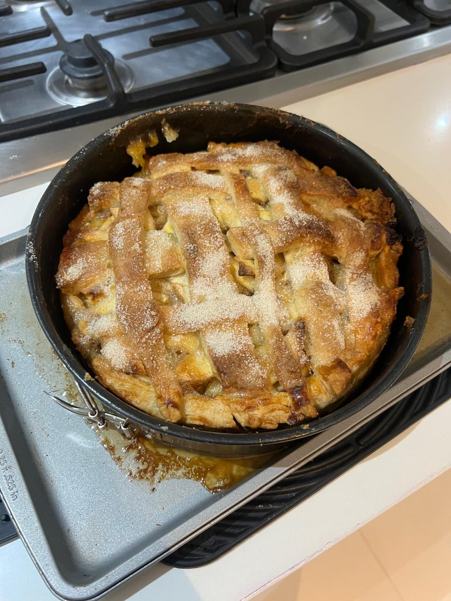
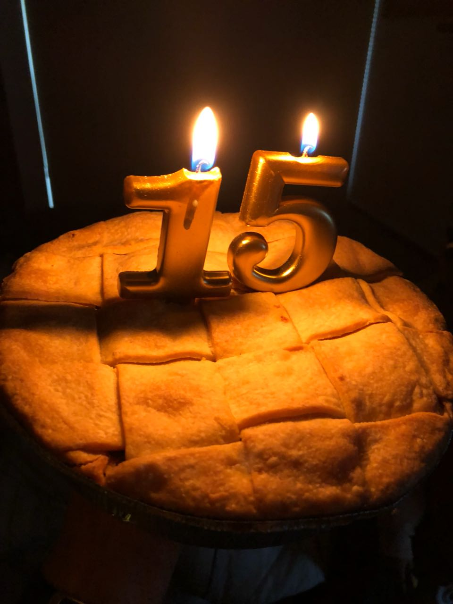

Hi! I'm Emiliano Franco, and I love apple pie. I have been tasting and rating (to myself) apple pies for a long time, but now I wish to share my experience tasting this beautiful dessert. This website shares my honest reviews to help you discover the best apple pies, as well as a bit of history about this dessert.
About Me


My love for apple pie started when I was young. I disliked many candies, cakes, and desserts when I was young, until I found this dessert and fell in love with it. Ever since I was 6 years old, I always had an apple pie as a replacement for my birthday cake. This made apple pie even more special to me because it was my tradition, not just a regular dessert. I made it my mission to taste every apple pie (or apple dessert) that I came across, either in a small bakery or in the fanciest restaurant. Each pie tells a different story through its crust, filling, and flavor. Now I review every apple pie I try, hoping to help others find the perfect slice.
My Rating System
I rate each apple pie using a point-based system. Each pie can earn up to 5 points total:
1 Point - Visual Appeal
The pie must look good. I look for a golden-brown crust with no burnt spots, an even shape, and a nice presentation. The pie should look appetizing and well-made.
1 Point - Balanced Sweetness
The pie must not be too sweet or too bland. The sugar should enhance the apple flavor, not hide it. There should be a good balance between sweet and tart.
1 Point - Perfect Crust
The crust must be flaky, buttery, and the right thickness. It should not be soggy on the bottom or too hard. A good crust adds flavor and texture to the pie.
1 Point - Good Apple Texture
The apples inside should be soft but still have some bite. They should not be mushy or crunchy. The filling should hold together when you cut a slice.
1 Point - Overall Flavor Balance
All the flavors must work together well. The cinnamon, apples, crust, and sweetness should create a harmonious taste. This is the most important point because it shows whether the pie is truly excellent.
Final Scores
- 5 Points = Perfect, the best apple pie I have ever tasted
- 4 Points = Excellent, I would buy this again
- 3 Points = Good, but has some problems
- 2 Points = Okay, not very special
- 1 Point = Poor, I do not recommend